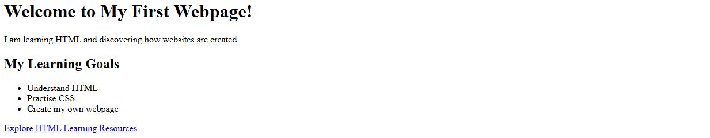

My First Handshake with HTML & CSS
From Classroom Scribbles to Bringing Web Pages to Life
Before the BODY: The Foundation Every HTML Page Needs
Here is a question worth asking before we write our first heading: How does a browser know what kind of document it is reading, what language the page uses, and which resources it should load? The answer begins before the visible content — in the foundation of the HTML document.
"A webpage does not begin when something appears on the screen. It begins when the browser is given a structure it can understand."
Beginners often start with elements such as headings, paragraphs,
images and links. These are important, but learning only the
<body> elements leaves out a big part of the picture.
A well-structured HTML document also needs a document declaration,
a root element, a <head> section and useful metadata.
First, what is an HTML boilerplate?
An HTML boilerplate is a ready-to-use starting structure for an HTML page. It contains the essential document declarations and commonly used head elements, so you do not have to rebuild the foundation from scratch every time you create a page. It is a starting point, not a fixed set of elements that every page must use in exactly the same way.
<!DOCTYPE html>
<html lang="en">
<head>
<meta charset="UTF-8">
<meta name="viewport" content="width=device-width, initial-scale=1.0">
<meta name="description" content="A short description of my webpage.">
<title>My Project</title>
<link rel="stylesheet" href="styles.css">
</head>
<body>
<h1>Hello World!</h1>
<p>Welcome to my webpage.</p>
</body>
</html>This is the document foundation with a small example of visible content. Now let's open it up line by line and understand why each part is there.
1. <!DOCTYPE html> — What does DOCTYPE really do?
<!DOCTYPE html>DOCTYPE means Document Type Declaration. It is not an HTML element. It is a declaration placed at the very beginning of the document to tell the browser to use the modern HTML standards-based rendering mode.
Where did it come from? Older HTML versions,
including HTML 4.01, used longer DOCTYPE declarations that referred
to a Document Type Definition (DTD). A DTD described the rules
for that document type. HTML5 simplified the declaration to the
short form <!DOCTYPE html>.
What if it is missing? Browsers may use Quirks Mode, a compatibility mode that imitates some older browser behaviours. This can make layout and sizing behave differently from modern standards-based rendering.
Question: Does DOCTYPE create a heading or show text on the page?
Answer: No. It is an instruction to the browser, not visible page content.
2. <html lang="en"> — The root of the page
<html lang="en">
...
</html>
The <html> element is the root element. It wraps
the whole HTML document, including both <head>
and <body>.
The lang attribute declares the main language of the
page. In lang="en", en means English.
You could use lang="hi" for a Hindi-language page.
This helps assistive technologies, browsers and search systems
interpret the language more accurately.
Question: Islangan HTML tag?
Answer: No. It is an attribute that provides extra information about the<html>element.
3. <head> — Information behind the webpage
The <head> element contains document metadata
and references to resources. Metadata means information about
the document, rather than the main content readers see in the page.
The head is not a place for ordinary visible headings or paragraphs.
The following is the head structure you asked to include. Notice that each line has a different responsibility:
<head>
<meta charset="UTF-8">
<meta name="viewport" content="width=device-width, initial-scale=1.0">
<title>My Project</title>
<link rel="stylesheet" href="styles.css">
</head>4. <meta charset="UTF-8"> — Character encoding
<meta charset="UTF-8">
The <meta> element provides metadata. The
charset attribute specifies the character encoding
used by the document. UTF-8 can represent characters from many
writing systems, along with numbers and symbols.
It helps text such as Hello, नमस्ते and ₹ display correctly when the document is saved and served using the matching encoding.
Question: Does UTF-8 decide the font or text colour?
Answer: No. It defines how characters are encoded, not how they are styled.
5. The viewport meta tag — Helping pages fit device screens
<meta name="viewport"
content="width=device-width, initial-scale=1.0">-
name="viewport": identifies the metadata as viewport settings. -
width=device-width: sets the viewport width to the device's screen width. -
initial-scale=1.0: sets the initial zoom level to 100%.
This setting is an important part of responsive web development. Without it, a page can appear zoomed out or use an unsuitable layout viewport on mobile devices. But remember: this tag alone does not make a website responsive. Flexible layouts, CSS units and media queries are also needed.
6. <title> — The document's name
<title>My Project</title>
The <title> element sets the document title.
It commonly appears in the browser tab and may be used in
bookmarks and search result title links. It belongs inside
<head>, not inside <body>.
7. <link rel="stylesheet" href="styles.css"> — Connecting CSS
<link rel="stylesheet" href="styles.css">-
<link>: connects the document to an external resource. -
rel="stylesheet": describes the relationship; the resource is a stylesheet. -
href="styles.css": gives the location of the CSS file. Here it assumes the file is in the same folder as the HTML document.
The browser can load the stylesheet and apply its rules to the HTML elements. HTML provides the structure; CSS controls presentation such as colours, fonts, spacing, borders and layout.
Question: Does the link tag write CSS styles for us?
Answer: No. It connects the CSS file. The actual styling rules are written inside that file.
8. <body> — The content users interact with
<body>
<h1>Hello World!</h1>
<p>Welcome to my webpage.</p>
</body>
The <body> contains the document's main content:
headings, paragraphs, images, links, lists, tables, forms, buttons,
audio, video and other page content. The browser interprets these
elements and displays the resulting page.
So, what happens if we write only an <h1> and
a <p> without writing the full structure?
Modern browsers can often recover from incomplete HTML and display
the content. But relying on browser recovery is not good practice.
A complete document gives the browser clear instructions and makes
the page more predictable and maintainable.
9. Closing tags — Knowing where elements end
</body>
</html>
The slash in </body> and
</html> marks closing tags. They indicate the
end of those elements. Most HTML elements have opening and closing
tags, while elements such as <meta> and
<link> are void elements and do not need closing
tags.
10. How do all these parts work together?
Think of the document as a well-organised structure. DOCTYPE tells the browser to use standards mode; HTML is the root; HEAD provides document information and resource references; BODY holds the main content. The browser parses the HTML, builds its document representation and uses the linked resources when rendering the page.
- DOCTYPE: standards-mode declaration.
- HTML: root element of the document.
- HEAD: metadata and resource references.
- META: document metadata, such as encoding and viewport settings.
- TITLE: document title.
- LINK: connects an external resource such as a CSS stylesheet.
- BODY: main webpage content.
What should a beginner do — and what should they avoid?
- Start new pages with a clear HTML5 boilerplate.
- Understand what each declaration, element and attribute does.
- Keep document metadata inside
<head>and page content inside<body>. - Use the correct language and character encoding.
- Connect external CSS using the correct file path.
- Test your page in a browser and on different screen sizes.
- Do not treat DOCTYPE as an ordinary HTML element.
- Do not put visible page content such as headings and paragraphs in the head.
- Do not assume the viewport tag alone makes a page responsive.
- Do not copy a boilerplate without understanding its purpose.
- Do not assume that a browser displaying incomplete HTML means the structure is correct.
"Do not begin by asking only, 'Which tag should I write?' First ask, 'What does the browser need to understand my page?'"
01. Where It All Started
Every learning journey has a starting point. Mine began during my BCA studies, when HTML and CSS were introduced in our regular Computer Applications classes.
Initially, these technologies were simply new subjects in my notebook. I started learning what HTML and CSS meant, why websites needed them, and how developers used them to create web pages.
I gradually realised that the websites we visit every day are not just collections of pictures and text. Behind every page is an organised structure and a visual design working together.
"I started by learning how websites were written. Soon, I became curious about how I could create one myself."
From everyday websites to web development
Think about an online shopping website. It contains product names, prices, images, navigation links, buttons and descriptions. All these elements need a meaningful structure before their appearance can be designed.
Similarly, a college website has admission information, course lists, notices, contact details and navigation. HTML and CSS help organise and present this information.
A simple way to understand my first concepts
- HTML gives a webpage its structure.
- CSS makes that structure visually attractive.
- A browser interprets the code and displays the page.
What I wanted to discover
Instead of limiting myself to remembering definitions, I wanted to understand what happened when I wrote a piece of code and opened it in a browser. That curiosity became my first step towards practical web designing.
"A new technology becomes interesting when you stop reading about it and start experimenting with it."
02. Understanding HTML
HTML stands for HyperText Markup Language. It is the standard markup language used to structure the content of web pages.
To understand HTML, imagine a newspaper. A newspaper has a main headline, smaller headings, paragraphs, photographs and different sections of information. Each part has its own purpose.
HTML works in a similar way. It tells the browser which content is a heading, which content is a paragraph, where an image belongs and which text should work as a link.
HTML in the real world
Consider a college website displaying its admission announcement. We might need a heading, an explanatory paragraph, an admission image and a link to the application form.
<h1>Admissions Open 2027</h1>
<p>
Applications are now open for
undergraduate courses.
</p>
<a href="admission.html">
Apply Now
</a>The browser recognises the elements and displays the heading, paragraph and clickable link.
What makes HTML important?
- It organises information into meaningful elements.
- It creates the foundation of web pages.
- It supports images, links, tables, forms and multimedia.
- It works alongside CSS and JavaScript.
- Semantic HTML helps browsers and assistive technologies understand content.
Remember this distinction
HTML is a markup language, not a programming language. Its main responsibility is describing the structure and meaning of webpage content.
"HTML tells the browser what the content is, not how beautiful it should look."
03. My First HTML Page
After understanding the basic idea of HTML, it was time to write my first page. I started with a simple text editor — Notepad.
I opened a blank document, wrote some HTML code, saved the file with an .html extension and opened it in my browser.
Seeing my written code appear as an actual webpage was a small but exciting experience. It helped me understand that a browser could interpret my instructions and turn them into visible content.
Let's create a first webpage
<!DOCTYPE html>
<html lang="en">
<head>
<meta charset="UTF-8">
<meta name="viewport"
content="width=device-width, initial-scale=1.0">
<title>My First HTML Page</title>
</head>
<body>
<h1>Welcome to My First Webpage!</h1>
<p>
I am learning HTML and discovering
how websites are created.
</p>
<h2>My Learning Goals</h2>
<ul>
<li>Understand HTML</li>
<li>Practise CSS</li>
<li>Create my own webpage</li>
</ul>
<a href="https://developer.mozilla.org/">
Explore HTML Learning Resources
</a>
</body>
</html>What happened after writing the code?
- Opened Notepad.
- Wrote the HTML document.
- Saved the file as
index.html. - Opened the saved file in a web browser.
- Observed the output displayed on the screen.
- Changed the content and refreshed the browser.
My first practical lesson
The browser does not display the HTML code as ordinary text. It interprets the markup and renders the elements according to their meaning.

"My first webpage was simple, but it gave me the confidence to create something of my own."
04. Understanding HTML Tags
Once I started writing HTML, the next important question was: what are these opening and closing symbols that make the browser understand my content?
These are called HTML tags. Most HTML elements consist of an opening tag, content and a closing tag.
Understanding the basic structure
<p>Learning HTML is interesting.</p>- <p> — Opening tag.
- Learning HTML is interesting. — Content.
- </p> — Closing tag.
Together, the opening tag, content and closing tag form a paragraph element.
Common HTML tags I started exploring
<h1>Main Heading</h1>
<h2>Subheading</h2>
<p>This is a paragraph.</p>
<a href="https://example.com">
Visit Website
</a>
<img src="photo.jpg"
alt="A sample photograph">
<ul>
<li>HTML</li>
<li>CSS</li>
</ul>Tags, elements and attributes — are they the same?
Not exactly. A tag is the markup written inside angle brackets. An element represents the complete structure. An attribute provides additional information about an element.
<a href="contact.html"
target="_blank">
Contact Us
</a>hrefspecifies the destination.targetcontrols where the linked page opens.contact.htmlis the attribute value.
Exploring more than basic text
As I progressed, I explored images, ordered and unordered lists, tables, forms, formatting elements, multimedia and semantic elements.
For example, an online registration page uses forms to collect names, email addresses and other information. A product page uses images and descriptions. A news website uses headings, articles and navigation.
My practice rule
Learn the purpose of an element first. Then write it, change its content and observe the result. Do not memorise tags without understanding their use.
05. Entering the World of CSS
After exploring HTML, I began to notice something: a webpage could have all the necessary content and still look very plain.
Headings, paragraphs, lists and links gave the page its structure, but how could I control their colours, sizes, spacing and overall appearance?
This is where CSS entered my learning journey.
What does CSS bring to a webpage?
CSS stands for Cascading Style Sheets. It is used to control the presentation and layout of HTML documents.
Imagine a house. HTML is like its rooms, doors, windows and walls. CSS is like the paint, decoration, furniture arrangement and finishing that give the house its visual appearance.
Everyday example: A restaurant website
- HTML creates the menu headings and food descriptions.
- CSS gives the menu its colours and typography.
- CSS also arranges food images and menu cards.
My first look at CSS syntax
h1 {
color: blue;
font-size: 32px;
text-align: center;
}
Here, h1 is the selector. The properties
specify what we want to change, and the values
specify how those properties should behave.
What can CSS control?
- Text colour and font size.
- Background colours and images.
- Borders, outlines and shadows.
- Margins and padding.
- Element positioning and layout.
- Gradients, transitions and animations.
- Responsive designs for different devices.
"HTML creates the foundation. CSS gives that foundation its visual personality."
06. Understanding CSS
Learning CSS was not only about choosing colours. I needed to understand how styling instructions were written and how browsers applied them to particular HTML elements.
1. CSS selectors
A selector identifies the HTML elements that should receive a particular style.
/* Element selector */
p {
color: #444;
}
/* Class selector */
.card {
background-color: white;
}
/* ID selector */
#main-heading {
color: darkblue;
}2. CSS properties and values
Properties define what we want to style, while values define the selected styling option.
h2 {
color: navy;
font-size: 28px;
margin-bottom: 15px;
text-align: center;
}3. Understanding the CSS box model
Every element can be understood as a rectangular box consisting of content, padding, border and margin.
Imagine a framed photograph
- Content: The photograph itself.
- Padding: Space between the photograph and its frame.
- Border: The frame around it.
- Margin: Space between this frame and other objects.
.photo-card {
width: 300px;
padding: 20px;
border: 2px solid #315c9b;
margin: 15px;
}4. Backgrounds, borders and positioning
I also began exploring how elements could be positioned and how backgrounds and borders could change their appearance.
.practice-box {
background-color: #eaf1fc;
border: 2px solid #315c9b;
outline: 2px dashed #9bb6df;
margin: 20px;
padding: 20px;
position: relative;
top: 5px;
}5. Gradients, transitions and animations
Gradually, I experimented with more visual effects. Gradients allowed me to blend colours, transitions made changes smoother, and animations introduced movement into elements.
.gradient-card {
background: linear-gradient(
120deg,
#315c9b,
#8caddb
);
padding: 25px;
border-radius: 10px;
transition: transform 0.3s ease;
}
.gradient-card:hover {
transform: translateY(-5px);
}My growing understanding
CSS became easier when I stopped treating properties as isolated instructions and began understanding how they worked together.
07. Connecting HTML with CSS
Understanding HTML and CSS separately was important, but the real experience began when I connected them.
HTML provides the elements, while CSS selects those elements and controls their appearance.
How do we connect an external CSS file?
We use the <link> element inside
the HTML document's <head>.
<!DOCTYPE html>
<html lang="en">
<head>
<meta charset="UTF-8">
<title>My HTML and CSS Page</title>
<link rel="stylesheet"
href="style.css">
</head>
<body>
<h1>Welcome to My Website</h1>
<p>
HTML and CSS work together
to create webpages.
</p>
</body>
</html>body {
font-family: Arial, sans-serif;
background-color: #f3f6fb;
}
h1 {
color: #315c9b;
text-align: center;
}
p {
color: #444;
font-size: 18px;
}Understanding the connection
The browser reads the HTML document, discovers the linked stylesheet and applies the matching CSS rules. The result is a webpage with structured content and visual styling.
A practical example: An online product card
- HTML creates the product image, name, price and button.
- CSS arranges the content inside a card.
- CSS adds the background, border, spacing and hover effect.
"Writing HTML and CSS separately helped me understand that good web design is a combination of structure and presentation."
08. My First Styling Practice
Once I understood how to connect CSS with HTML, I started experimenting with the appearance of different elements.
Instead of using only one colour or one type of layout, I wanted to see what would happen when I changed backgrounds, borders, spacing, positions and other CSS properties.
Practice 1 — Backgrounds and colours
.welcome-box {
background-color: #e8f0ff;
color: #263b5a;
padding: 25px;
border-radius: 8px;
}Practice 2 — Margins and padding
.content-box {
margin: 20px;
padding: 25px;
border: 1px solid #b8c9df;
}Practice 3 — Positioning
Positioning was one of the concepts that required extra attention. I experimented with relative positioning and observed how an element could move from its original position.
.moving-box {
position: relative;
left: 15px;
top: 10px;
}Practice 4 — Gradient effects
.colour-panel {
background: linear-gradient(
to right,
#315c9b,
#9bc2e8
);
padding: 30px;
border-radius: 12px;
}Practice 5 — Hover effects and transitions
.my-button {
background-color: #315c9b;
color: white;
padding: 12px 22px;
border: none;
transition: background-color 0.3s ease;
}
.my-button:hover {
background-color: #203f70;
}What made practice interesting?
I could change a single CSS value, save the file, refresh the browser and immediately observe a different result.
I also explored borders, outlines, lists, tables, background images and animations. Each experiment helped me understand the relationship between code and visual output.
My practice approach
Write the code → Save the file → Refresh the browser → Observe the result → Change the values → Experiment again.
09. What I Learned
Learning HTML and CSS was not simply about writing code that worked. It was also about understanding mistakes, correcting them and developing the habit of experimenting independently.
Some mistakes were part of my learning
In the beginning, even small syntax mistakes could affect my output. Sometimes I missed a colon or semicolon, used quotation marks incorrectly or struggled to understand why a CSS property was not producing the expected result.
Relative positioning and gradient values also required repeated practice before their behaviour became clearer.
Example: A small CSS mistake
h1 {
color blue;
font-size: 30px
}h1 {
color: blue;
font-size: 30px;
}
The missing colon after color
makes that declaration invalid. The missing
final semicolon is optional here, but using
consistent semicolons makes CSS easier to read.
What these lessons taught me
- Read the code carefully before changing it.
- Understand the purpose of every property.
- Check opening and closing tags.
- Use correct punctuation and quotation marks.
- Experiment with different values.
- Compare browser output with the expected result.
- Do not become discouraged by errors.
My learning formula
"An error is not the end of a learning process. Sometimes it is the clearest explanation of what we still need to understand."
10. The Beginning of My Journey
Looking back, my first HTML and CSS exercises were small steps, but they introduced me to a completely new way of thinking about websites.
I began with classroom lessons, continued with simple code in Notepad, and gradually became interested in experimenting with webpage layouts, styling and visual presentation.
What started as learning two subjects during my BCA studies slowly developed into a personal interest in building websites and understanding how digital experiences are created.
From learning concepts to creating projects
My next goal was to use these foundations in practical projects. I wanted to move beyond individual HTML elements and CSS properties and understand how complete webpages could be planned, designed and developed.
What comes next in my learning journey?
- Building complete multi-section webpages.
- Practising responsive web design.
- Understanding JavaScript interactions.
- Exploring front-end and back-end development.
- Creating projects based on real-world ideas.
A message for fellow beginners
If you are starting your own web development journey, do not feel that you must understand everything in one day. Begin with a small webpage, practise each concept and give yourself time to experiment.
"I did not begin with the knowledge of how to build complete websites. I began with curiosity, a text editor and the willingness to learn. And that was enough to take my first step."